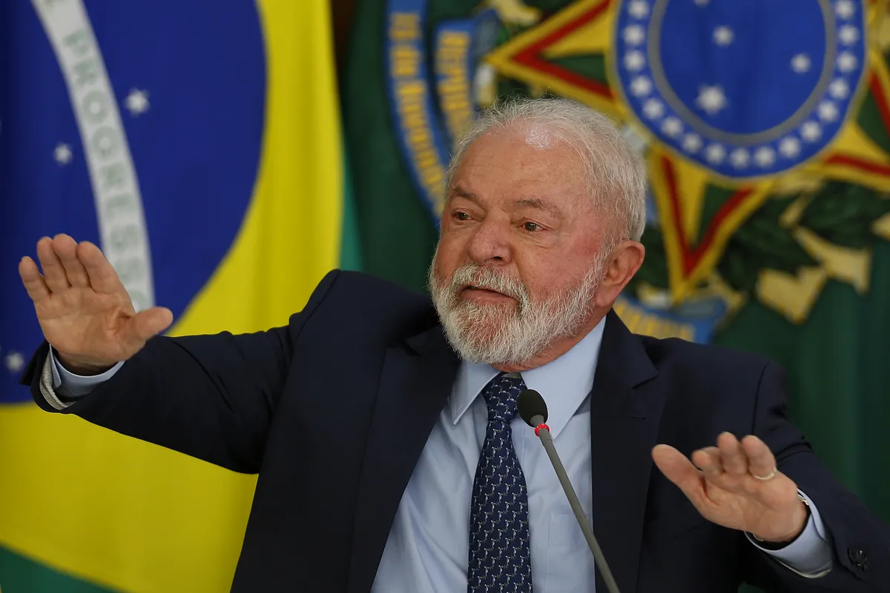

Bibliografia
Luiz Inácio Lula da Silva (nascido Luiz Inácio da Silva; Garanhuns, 27 de outubro de 1945),
mais conhecido como Lula, é um ex-metalúrgico, ex-sindicalista e político brasileiro.
Filiado ao Partido dos Trabalhadores (PT), é o 39º presidente do Brasil desde 1º de janeiro de 2023.
Foi também o 35º presidente da República, de 2003 a 2011.